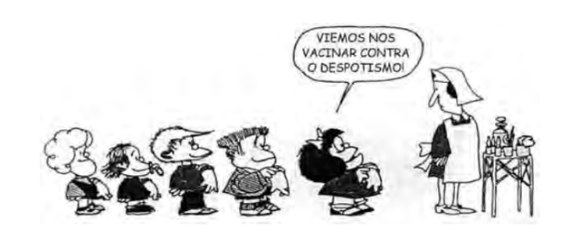
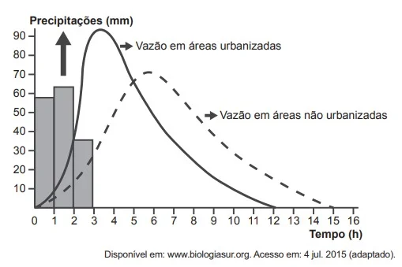
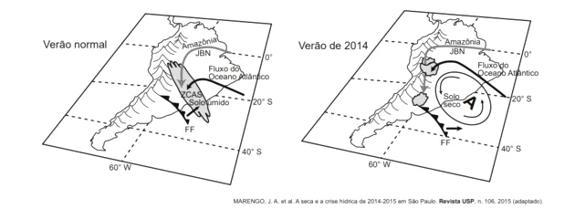

Questão 1:
ENEM 2019 - Dificuldade: Médio
A hospitalidade pura consiste em acolher aquele que chega antes de lhe impor condições, antes de saber e indagar o que quer que seja, ainda que seja um nome ou um “documento” de identidade. Mas ela também supõe que se dirija a ele, de maneira singular, chamando-o portanto e reconhecendo-lhe um nome próprio: “Como você se chama?” A hospitalidade consiste em fazer tudo para se dirigir ao outro, em lhe conceder, até mesmo perguntar seu nome, evitando que essa pergunta se torne uma “condição”, um inquérito policial, um fichamento ou um simples controle das fronteiras. Uma arte e uma poética, mas também toda uma política dependem disso, toda uma ética se decide aí.
DERRIDA, J. Papel-máquina. São Paulo: Estação Liberdade, 2004 (adaptado).
Associado ao contexto migratório contemporâneo, o conceito de hospitalidade proposto pelo autor impõe a necessidade de
Questão 2:
ENEM 2019 - Dificuldade: Fácil
Em sentido geral e fundamental, Direito é a técnica da coexistência humana, isto é, a técnica voltada a tornar possível a coexistência dos homens. Como técnica, o Direito se concretiza em um conjunto de regras (que, nesse caso, são leis ou normas); e tais regras têm por objeto o comportamento intersubjetivo, isto é, o comportamento recíproco dos homens entre si.
ABBAGNANO, N. Dicionário de Filosofia. São Paulo: Martins Fontes, 2007.
O sentido geral e fundamental do Direito, conforme foi destacado, refere-se à
Questão 3:
ENEM 2019 - Dificuldade: Fácil
O processamento da mandioca era uma atividade já realizada pelos nativos que viviam no Brasil antes da chegada de portugueses e africanos. Entretanto, ao longo do processo de colonização portuguesa, a produção de farinha foi aperfeiçoada e ampliada, tornando-se lugar-comum em todo o território da colônia portuguesa na América. Com a consolidação do comércio atlântico em suas diferentes conexões, a farinha atravessou os mares e chegou aos mercados africanos.
BEZERRA, N. R. Escravidão, farinha e tráfico atlântico: um novo olhar sobre as relações entre o Rio de Janeiro e Benguela (1790-1830). Disponível em: www.bn.br. Acesso em: 20 ago. 2014 (adaptado)
Considerando a formação do espaço atlântico, esse produto exemplifica historicamente a
Questão 4:
ENEM 2019 - Dificuldade: Médio
Brasil, Alemanha, Japão e Índia pedem reforma do Conselho de Segurança
Os representantes do G4 (Brasil, Alemanha, Índia e Japão) reiteraram, em setembro de 2018, a defesa pela ampliação do Conselho de Segurança da Organização das Nações Unidas (ONU) durante reunião em Nova York (Estados Unidos). Em declaração conjunta, de dez itens, os chanceleres destacaram que o órgão, no formato em que está, com apenas cinco membros permanentes e dez rotativos, não reflete o século 21. “A reforma do Conselho de Segurança é essencial para enfrentar os desafios complexos de hoje. Como aspirantes a novos membros permanentes de um conselho reformado, os ministros reiteraram seu compromisso de trabalhar para fortalecer o funcionamento da ONU e da ordem multilateral global, bem como seu apoio às respectivas candidaturas”, afirma a declaração conjunta.
Disponível em: http://agenciabrasil.ebc.com.br. Acesso em: 7 dez. 2018 (adaptado).
Os países mencionados no texto justificam sua pretensão com base na seguinte característica comum:
Questão 5:
ENEM 2019 - Dificuldade: Fácil
Tratava-se agora de construir um ritmo novo. Para tanto, era necessário convocar todas as forças vivas da Nação, todos os homens que, com vontade de trabalhar e confiança no futuro, pudessem erguer, num tempo novo, um novo Tempo. E, à grande convocação que conclamava o povo para a gigantesca tarefa, começaram a chegar de todos os cantos da imensa pátria os trabalhadores: os homens simples e quietos, com pés de raiz, rostos de couro e mãos de pedra, e no calcanho, em carro de boi, em lombo de burro, em paus-de-arara, por todas as formas possíveis e imagináveis, em sua mudez cheia de esperança, muitas vezes deixando para trás mulheres e filhos a aguardar suas promessas de melhores dias; foram chegando de tantos povoados, tantas cidades cujos nomes pareciam cantar saudades aos seus ouvidos, dentro dos antigos ritmos da imensa pátria... Terra de sol, Terra de luz... Brasil! Brasil! Brasília!
MORAES, V.; JOBIM, A. C. Brasília, sinfonia da alvorada. III – A chegada dos candangos. Disponível em: www.viniciusdemoraes.com.br. Acesso em: 14 ago. 2012 (adaptado).
No texto, a narrativa produzida sobre a construção de Brasília articula os elementos políticos e socioeconômicos indicados, respectivamente, em:
Questão 6:
ENEM 2019 - Dificuldade: Fácil
Saudado por centenas de militantes de movimentos sociais de quarenta países, o papa Francisco encerrou no dia 09/07/2015 o 2º Encontro Mundial dos Movimentos Populares, em Santa Cruz de La Sierra, na Bolívia. Segundo ele, a “globalização da esperança, que nasce dos povos e cresce entre os pobres, deve substituir esta globalização da exclusão e da indiferença”.
Disponível em: http://cartamaior.com.br. Acesso em: 15 jul. 2015 (adaptado).
No texto há uma crítica ao seguinte aspecto do mundo globalizado:
Questão 7:
ENEM 2019 - Dificuldade: Fácil
A Declaração Universal dos Direitos Humanos, adotada e proclamada pela Assembleia Geral da ONU na Resolução 217-A, de 10 de dezembro de 1948, foi um acontecimento histórico de grande relevância. Ao afirmar, pela primeira vez em escala planetária, o papel dos direitos humanos na convivência coletiva, pode ser considerada um evento inaugural de uma nova concepção de vida internacional.
LAFER, C. Declaração Universal dos Direitos Humanos (1948). In: MAGNOLI, D. (Org.) História da paz. São Paulo: Contexto, 2008.
A declaração citada no texto introduziu uma nova concepção nas relações internacionais ao possibilitar a
Questão 8:
ENEM 2019 - Dificuldade: Fácil

“Nossa cultura não cabe nos seus museus”.
TOLENTINO, A. B. Patrimônio cultural e discursos museológicos. Midas, n. 6, 2016.
Produzida no Chile, no final da década de 1970, a imagem expressa um conflito entre culturas e sua presença em museus decorrente da
Questão 9:
ENEM 2019 - Dificuldade: Fácil
A divisão política do mundo como apresentada na imagem seria possível caso o planeta fosse marcado pela estabilidade do(a)

Questão 10:
ENEM 2019 - Dificuldade: Média
A cidade medieval é, antes de mais nada, uma sociedade da abundância, concentrada num pequeno espaço em meio a vastas regiões pouco povoadas. Em seguida, é um lugar de produção e de trocas, onde se articulam o artesanato e o comércio, sustentados por uma economia monetária. É também o centro de um sistema de valores particular, do qual emerge a prática laboriosa e criativa do trabalho, o gosto pelo negócio e pelo dinheiro,a inclinação para o luxo, o senso da beleza. É ainda um sistema de organização de um espaço fechado com muralhas, onde se penetra por portas e se caminha por ruas e praças e que é guarnecido por torres.
No texto, o espaço descrito se caracteriza pela associação entre a ampliação das atividades urbanas e aQuestão 11:
ENEM 2019 - Dificuldade: Fácil
A pegada ecológica gigante que estamos a deixar no planeta está a transformá-lo de tal forma que os especialistas consideram que já entramos numa nova época geológica, o Antropoceno. E muitos defendem que, se não travarmos a crise ambiental, mais rapidamente transformaremos a Terra em Vênus do que iremos a Marte. A expressão “Antropoceno” é atribuída ao químico e prêmio Nobel Paul Crutzen, que a propôs durante uma conferência em 2000, ao mesmo tempo que anunciou o fim do Holoceno — a época geológica em que os seres humanos se encontram há cerca de 12 mil anos, segundo a União Internacional das Ciências Geológicas (UICG), a entidade que define as unidades de tempo geológicas.
R. D. Antropoceno: e se formos os últimos seres vivos a alterar a Terra? Disponível em: www.publico.pt. Acesso em: 5 dez. 2017 (adaptado).
A concepção apresentada considera a existência de uma nova época geológica concebida a partir da capacidade de influência humana nos processos
Questão 12:
ENEM 2019 - Dificuldade: Média

Disponível em: www.ibge.gov.br. Acesso em: 11 dez. 2018 (adaptado).
A geração de imagens por meio da tecnologia ilustrada depende da variação do(a):
Questão 13:
ENEM 2019 - Dificuldade: Média
Dizem que Humboldt, naturalista do século XIX, maravilhado pela geografia, flora e fauna da região sul-americana, via seus habitantes como se fossem mendigos sentados sobre um saco de ouro, referindo-se a suas incomensuráveis riquezas naturais não exploradas. De alguma maneira, o cientista ratificou nosso papel de exportadores de natureza no que seria o mundo depois da colonização ibérica: enxergou-nos como territórios condenados a aproveitar os recursos naturais existentes.
ACOSTA, A. Bem viver: uma oportunidade para imaginar outros mundos. São Paulo: Elefante, 2016 (adaptado).
A relação entre ser humano e natureza ressaltada no texto refletia a permanência da seguinte corrente filosófica:
Questão 14:
ENEM 2010 - Dificuldade: Média
Democracia: “regime político no qual a soberania é exercida pelo povo, pertence ao conjunto dos cidadãos.”
JAPIASSÚ, H.; MARCONDES, D. Dicionário Básico de Filosofia. Rio de Janeiro: Zahar, 2006.
Uma suposta “vacina” contra o despotismo, em um contexto democrático, tem por objetivo
Questão 15:
ENEM 2018 - Dificuldade: Fácil
Em Beirute, no Líbano, quando perguntado sobre onde se encontram os refugiados sírios, a resposta do homem é imediata: “em todos os lugares e em lugar nenhum”. Andando ao acaso, não é raro ver, sob um prédio ou num canto de calçada, ao abrigo do vento, uma família refugiada em volta de uma refeição frugal posta sobre jornais como se fossem guardanapos. Também se vê de vez em quando uma tenda com a sigla ACNUR (Alto Comissariado das Nações Unidas para Refugiados), erguida em um dos raros terrenos vagos da capital.
JABER, H. Quem realmente acolhe os refugiados? Le Monde Diplomatique Brasil, out.2015 (adaptado).
O cenário descrito aponta para uma crise humanitária que é explicada pelo processo de
Questão 16:
ENEM 2018 - Dificuldade: Média

A dinâmica hidrológica expressa no gráfico demonstra que o processo de urbanização promove a
Questão 17:
ENEM 2018 - Dificuldade: Média
TEXTO I
Há mais de duas décadas, os cientistas e ambientalistas têm alertado para o fato de a água doce ser um recurso escasso em nosso planeta. Desde o começo de 2014, o Sudeste do Brasil adquiriu uma clara percepção dessa realidade em função da seca.
TEXTO II
Dinâmicas atmosféricas no Brasil
Elementos relevantes ao transporte de umidade na América do Sul a leste dos Andes pelos Jatos de Baixos Níveis (JBN), Frentes Frias (FF) e transporte de umidade do Atlântico Sul, assim como a presença da Zona de Convergência do Atlântico Sul (ZCAS), para um verão normal e para o verão seco de 2014. “A” representa o centro da anomalia de alta pressão atmosférica.
De acordo com as informações apresentadas, a seca de 2014, no Sudeste, teve como causa natural o(a)
Questão 18:
ENEM 2018 - Dificuldade: Média
Os países industriais adotaram uma concepção diferente das relações familiares e do lugar da fecundidade na vida familiar e social. A preocupação de garantir uma transmissão integral das vantagens econômicas e sociais adquiridas tem como resultado uma ação voluntária de limitação do número de nascimentos.
GEORGE, P. Panorama do mundo atual. São Paulo: Difusão Europeia do Livro, 1968 (adaptado).
Em meados do século XX, o fenômeno social descrito contribuiu para o processo europeu de
Questão 19:
ENEM 2017 - Dificuldade: Média
O desgaste acelerado sempre existirá se o agricultor não tiver o devido cuidado de combater as causas, relacionadas a vários processos, tais como: empobrecimento químico e lixiviação provocados pelo esgotamento causado pelas colheitas e pela lavagem vertical de nutrientes da água que se infiltra no solo, bem como pela retirada de elementos nutritivos com as colheitas. Os nutrientes retirados, quando não repostos, são comumente substituídos por elementos tóxicos, como, por exemplo, o alumínio.
LEPSCH, I. Formação e conservação dos solos. São Paulo: Oficinas de Texto, 2002 (adaptado).
A dinâmica ambiental exemplificada no texto gera a seguinte consequência para o solo agricultável
Questão 20:
ENEM 2017 - Dificuldade: Média
Os maiores consumidores da infraestrutura logística para exportação no Brasil são os produtos a granel, dentre os quais se destacam o minério de ferro, petróleo e seus derivados e a soja, que, por possuírem baixo valor agregado, e por serem movimentados em grande volume, necessitam de uma estrutura de grande porte e baixos custos. No caso da soja, a infraestrutura deixa muito a desejar, resultando em enormes filas de navios, caminhões e trens, que, por ficarem grande parte do tempo ocioso nas filas, têm seu custo majorado, onerando fortemente o exportador, afetando sua margem de lucro e ameaçando nossa competitividade internacional.
FLEURY, P. F. A infraestrutura e os desafios logísticos das exportações brasileiras. Rio de Janeiro: CEL; Coppead; UFRJ, 2005 (adaptado).
No contexto do início do século XXI, uma ação para solucionar os problemas logísticos da soja apresentados no texto seria a